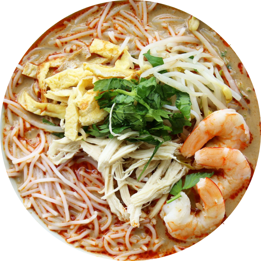
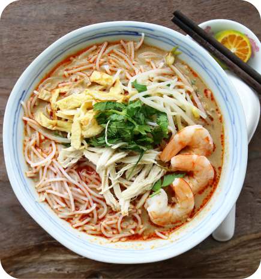
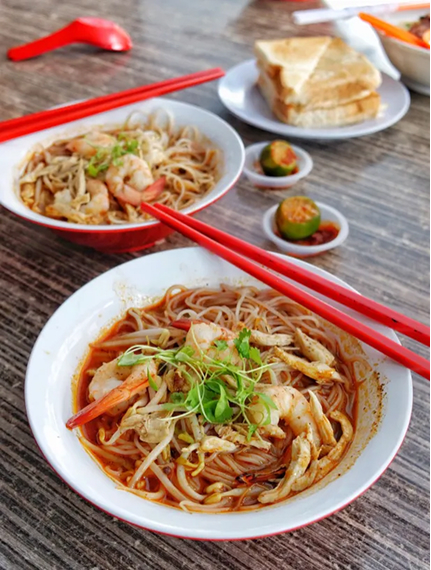
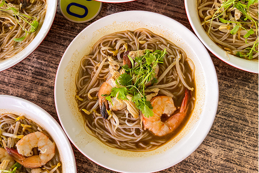

Sarawak Laksa is a rich and aromatic noodle dish that blends Chinese and Malay influences. Its unique broth, made with a special spice paste, belacan, and coconut milk, creates a flavorful and slightly spicy taste. Served with rice vermicelli, shredded chicken, prawns, and a squeeze of lime, it’s a must-try dish that showcases Sarawak’s diverse food culture.


Sarawak Laksa dates back to the early 20th century, believed to have been introduced by Chinese immigrants who adapted local ingredients into their traditional laksa recipes.
The dish gained popularity in the 1940s when a local vendor refined its signature spice paste, blending Chinese and Malay flavors with belacan and coconut milk. Over time, Sarawak Laksa became a beloved staple, earning global recognition for its unique taste and rich cultural heritage.

Out of all of Kuching’s kopitiams, Chong Choon’s bright, airy and spacious setup was my favourite. It’s the sort of coffee shop that can imagine youself growing old in… newspaper, big bowl of Laksa and daily cup of iced coffee in hand.
The crowds turn up here every morning for Poh Lam’s Sarawak Laksa. Beautifully spiced, not overly creamy with a good kick of peppercorns and acidity, the broth here was superb and easily one of the best we sampled on the trip. At RM7 for a large bowl, it is fantastic value too with a generous amount of noodles, prawns & chicken for the price.

I personally like the laksa served by Poh Lam Laksa in Chong Choon Cafe located in Abell Road and I always go to this place whenever I visit Kuching. The laksa came after 20 minutes of waiting but it was worth it for the price of MYR6.00. I also ordered the layer tea which is quite tasty.
It's just the most amazing laksa breakfast! In my entire time in Borneo, this was one of my most favorite meals. We ate there 2 breakfasts in a row.
One of the best Sarawak laksa in Kuching to my liking, ordered a medium bowl cost RM10. A note on soft boiled egg, similar to Singapore - they provide dark soy sauce instead of light soy sauce. I remember I had the same in Pg, light soy sauce being provided instead; I had impression that the usual one is light soy sauce… :)
Discover more delicious Sarawak Chinese dishes and their rich history!


SarawakChineseFood © 2025 | All Rights Reserved